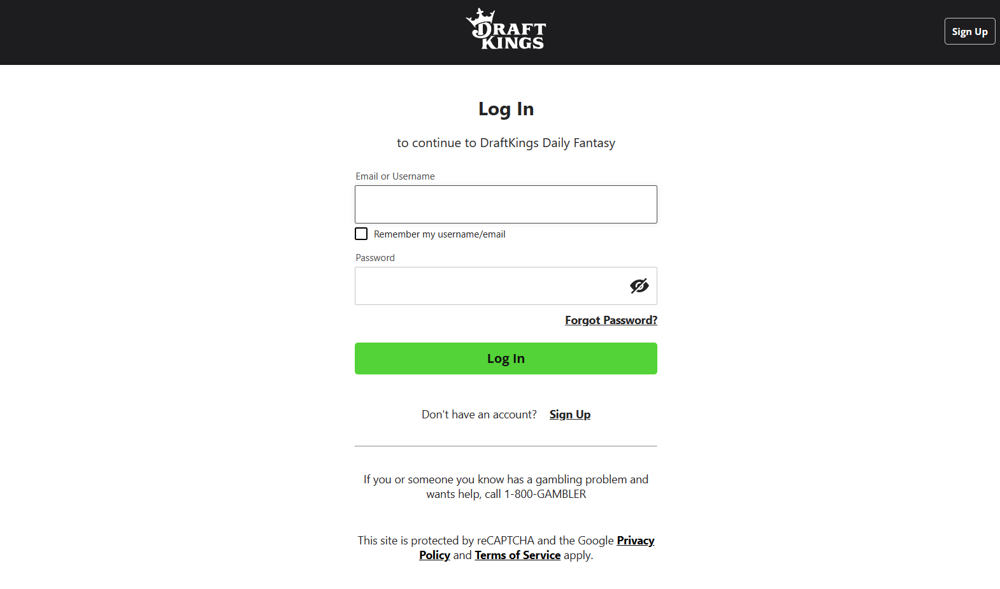

In the first blog post of the Riddler’s development, I want to talk about webscraping. The logical first step of Riddler was to collect data from Draft Kings. This data is a prerequisite for testing the performance of the lineup generation algorithm. To illustrate the dynamics of this project, I created a visualization below that captures some of the key processes.
By scraping Draft Kings, we can check off the “Contest Info” box. There is a lot of useful information we can obtain from their website, including:
- Contest Types
- Number of Partipants per Contest
- Draftable Players and their Salary
- Contest Payout Structure
- Maximum Entries per Contest
If you navigate through the Draft Kings Lobby, you can easily find all this information for any contest.
My First Attempt
I was inspired to automate the contest information collection process using familiar webscraping techniques, like Requests and BeautifulSoup. However, upon my first iterations of scraping, I discovered these methods would not work well for my problem due to authentication requirements, and the volume of requests I needed to make. On certain parts of the website, I needed to send in cookies to prove that I had an account. While you can send cookies with the requests package, my problem was having cookies always ready. There were many session cookies that would expire within 24 hours, so I couldn’t just do this step manually once and call it a day. Additionally, there are on the scale of thousands of contests per day, and I needed to request information about each one. If I were to make requests sequentially, this scraping method would take a very long time, whereas I wanted it to take at most a couple minutes.
Solving the Authentication Issue
To get cookies from the browser, you need to simulate the browser. Simulating the browser means having your program open up an instance of your browser, and clicking on certain buttons and typing into text boxes the way you normally would. Luckily, Selenium allows you to do just that. The idea behind Selenium is that you can navigate a website by specifying which HTML elements to interact with. You can do this by providing tags, classes, ids, xpaths, or something else. In my case I opened up a browser automatically with Selenium and was looking at this page:

My goal is to type my credentials into the Username and Password boxes. The first thing I need to do is tell Selenium which HTML element to interact with. I can find the element in the HTML document by right-clicking on it and pressing inspect. Now to find a description of this element, right-click on it in the HTML document and hover over the copy tab and click on any of the options. Clicking on selector in this case identifies the Username box as #login-username-input and the Password box as #login-password-input. Now I can tell Selenium to type my Username and Password into these elements, and finally click the Log In button. To get an idea of how it looks in Selenium, here is a snippet doing what I just described.
def login(driver):
...
username = driver.find_element(By.ID, "login-username-input")
password = driver.find_element(By.ID, "login-password-input")
submit = driver.find_element(By.ID, "login-submit")
username.send_keys(os.getenv("DK_USERNAME"))
password.send_keys(os.getenv("DK_PASSWORD"))
submit.submit()For the full implementation, check out this Python Script in my GitHub Repo.
Now that we are logged in, we can retrieve the cookies from the browser and save them for later when we scrape contest data. We initially get the cookies in a dictionary, but depending on the tools you use later, you might want to store them differently. In my case, I needed the cookies in the Netscape cookies format because I was using the wget command. So, I wrote a utility function that converted the cookies to the desired format and wrote them to a file. Since Selenium is slow compared to other scraping tools that don’t automate the web broswer, we won’t be using Selenium again for speed purposes. But depending on your application, you could very well use Selenium for the rest of your webscraping project.
Solving the Speed Issue
As I mentioned before, processing a large number of sequential web requests is not a viable long term solution. Trying to retrieve a simple page like www.google.com can take half a second, which done 3,000 times in a row would guarantee a runtime of at least 25 minutes. So, we turn to xargs to parallelize this process. The entire xargs command is pretty beefy, so it wouldn’t be of much help to look at directly, so I’ll explain part by part, and you can refer to the full commands for downloading standings and downloading payouts. First, we need to understand how wget works. Here are the relevant flags and what they do:
| Flag | Argument | Purpose |
|---|---|---|
| –content-disposition | none | Sets the name of the file to what it was on the server |
| –load-cookies | netscape cookies file | Load cookies from a file |
| -o | log file | Log the results of the command for debugging |
| –input-file | urls file | Scrape many sites with one wget call |
| -U | user agent string | The user agent to use for the batch of requests |
So within one wget call we are scraping as many sites as are in the input file. It’s good to batch the urls together because it saves time by only initializing (i.e. loading cookies, creating log file) once, but not too much in order to maximize the benefits of parallelization later with xargs. I put 50 urls in each file. Note that nothing so far is parallelized. Each of the urls in the input file will be retrieved sequentially.
Parallelization comes in when we call this wget command within an xargs command. This will look something like xargs ... wget ... where the dots are flags and arguments to the command that comes before it. The flags that allow the command to be run in parallel are discussed below:
| Flag | Argument | Purpose |
|---|---|---|
| -L | max lines | How many lines to read at a time from input |
| -P | max processes | How many processes to run at a time |
Notice that the -L flag implies that we’re reading from input. What we are reading from input is a list of input files to later pass into wget. In our case, our flags were -L 1 -P 10 implying that we read one input file at a time, and run 10 processes in parallel. In this context, a process is a separate invocation of wget. So the speed-up happens because we have 10 wget processes running at the same time, which should make our scraping take about one tenth of the time. While we could go even faster by increasing the number of processes, I didn’t want to be a nuisance and flood DraftKings more than I already am.
Putting it all Together
Now that I had written and tested a successful scraper, I had to automate the process of running the script everyday. To do this I created a scheduled task to run a master script that included all the scraping commands on my computer everyday at 6am. I’m based on a Windows machine, so I used Task Scheduler, but there’s equivalent tools to do this for MacOS and Linux users as well.
Typically, this is good enough. But, I was concerned that sometimes my computer might not run the script for whatever reason (i.e. the computer is dead, or I’m travelling and not connected to the internet at 6am). To make me feel better about this data collection, I wanted to make the data collection redundant. And I also didn’t want to setup some program on AWS that would inevitably bankrupt me. So, I turned to GitHub Actions.
Actions are a great way to automate running code. The general idea is that you can create a YAML file with instructions of what to do and GitHub will follow those exact instructions provided you place it in the .github/workflows/ directory. You can find my workflow here.
Here are some highlights of the workflow that will help to understand the capabilities of Actions so you know what kinds of problems it is good at solving.
Run the code once daily at 6am EST (10 am UTC)
on:
schedule:
- cron: "0 10 * * *"Cron jobs are a popular way to schedule tasks on unix-based operating systems. You can review the syntax for cron scheduling to know how to achieve the schedule you want.
Cache the Python Environment so you can use the same one again tomorrow
- name: Checkout repo
uses: actions/checkout@master
- name: Set up Python
uses: actions/setup-python@v4
with:
python-version: "3.11"
- name: Cache Python Environment
uses: actions/cache@v3
with:
path: ${{ env.pythonLocation }}
key: ${{ env.pythonLocation }}-${{ hashFiles('setup.py') }}-${{ hashFiles('requirements.txt') }}Everytime you run an Action, you start off with a fresh virtual machine. If you want to use Python, you will have to download it fresh each time, which means you don’t have your packages that you used from last time. Downloading packages can take a really long time, so to avoid this delay, you can cache your python environments and packages so you can reuse what you have downloaded before.
Run Python Scripts
- name: Scrape Contests
run: python scripts/python/scrape_contests.pyEach time you specify a run command in YAML, you get direct access to the command-line. You can use this as you would on your machine and directly run a python script. It’s as easy as that.
Drawbacks
The only drawback I found with GitHub Actions so far is that I could not get selenium working properly. The issue had to do with the provided VM not having an external display, so the browser emulation could not fool DraftKings into thinking it was human on the website, and not a bot. This means that only some of the data is being scraped by GitHub each day. The silver-lining is that the data it scrapes can be used to fetch the missing parts on my machine locally if there’s ever a scenario that requires it.
Conclusion
If you’re new to webscraping, I hope you were able to learn a thing or two. One thing that you will learn if you haven’t already is that webscraping is always an arduous task, as no two websites are the same and there’s no one-size-fits-all solution. Webscraping is definitely an acquired taste, but it’s well worth its weight in data.